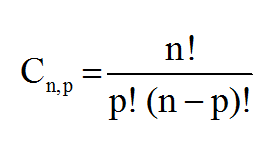
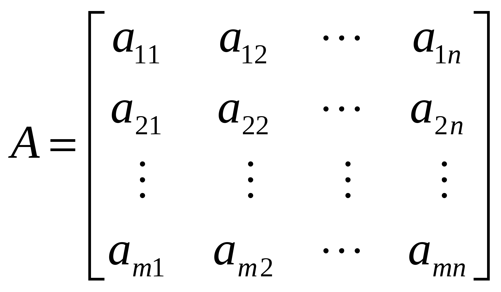
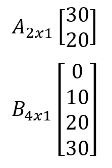

Conceitos básicos de matemática, fundamentais para a construção de algoritmos, e resolução de problemas computacionais.
1 - Ordem das Operações Aritméticas
As chamadas operações aritméticas, são as operações de adição (+), subtração (-), multiplicação (x ou *) e divisão (÷ ou /), sendo a adição, a operação inversa da subtração e multiplicação, a operação inversa da divisão.
Adição: Operação responsável por somar um ou mais números: Exemplo: 3+2 = 5; Subtração: Operação responsável por subtrair um ou mais números: Exemplo: 3-2 = 1; Multiplicação: Operação responsável por multiplicar um ou mais números: Exemplo: 3*2= 6; Divisão: Operação responsável por dividir um ou mais números: Exemplo: 3/2 = 1,5;
Lembrando que, a Potenciação é uma forma de representar a multiplicação, por exemplo: 3² (três ao quadrado) é a mesma coisa que 3*3. Já 3³ (Três ao cubo) é a mesma coisa que 3*3*3;
Já a Radiciação, é a operação que realizamos quando queremos descobrir qual o número que, multiplicado por ele mesmo, determinada quantidades de vezes, dá um valor que conhecemos. Exemplo: √9 =3 (raiz quadrada de 9 é igual 3), pois 3*3 =9;
Contudo, você pode se deparar com uma operação matemática ou uma conta desta forma: (2+3)×3², ou como a da imagem 8/2*(2+2). Para solucioná-la, é preciso seguir uma convenção que dita a ordem pela qual as operações devem ser executadas.
Sendo elas: 1º Parênteses (Dentro dos parênteses, você deve seguir a ordem das operações como faria em uma expressão sem eles.); 2º Expoentes (Potenciação) ou Raízes (Radiciação) - (da esquerda para a direita); 3º Multiplicações e Divisões (da esquerda para a direita); 4º Somas e Subtrações (da esquerda para a direita);
Exemplos:
2+3x5 = 2 + 15 = 17.
(Realiza a operação de multiplicação (3x5) primeiro, e soma-se ao 2, obtendo-se 17).
(2+3) x 3² = 5 x 3² = 5 x 9 = 45;
(Realiza a operação entre parênteses (2+3) primeiro, obtendo 5, então se realiza a operação de expoente (3²) obtendo 9, então multiplica-se os valores obtendo o resultado final 45).
Exemplo da imagem: 8/2*(2+2) = 8/2*(4) = 4*(4) = 16;
Escute essa aula
2 - Porcentagem e Regra de três
A porcentagem, é um cálculo matemático, utilizado para descobrir a proporção, entre o todo e uma de suas partes, é também chamado de percentagem.
A porcentagem está envolvida em várias situações do nosso cotidiano, como taxas de juros, descontos em produtos, resultados de pesquisas e votações, até mesmo, a porcentagem que nos resta de bateria em nossos celulares.
A porcentagem pode ser entendida como a razão entre um número qualquer e 100, e, é representada pelo símbolo de %.
Pode ser representada das seguintes formas: Fracionária: 50/100 Decimal: 0,5 Com o símbolo de %: 50%
Uma das formas de calcular a porcentagem de alguma coisa é utilizando a regra de três; na regra de três simples, é necessário que três valores sejam apresentados, para que assim, se descubra o quarto valor.
Pode ser representada pela seguinte formula:
Caso as grandezas sejam diretamente proporcionais, (se aumentando uma, a outra também aumenta), multiplicamos em Cruz ou X:
A -> X
B -> Y
B*X = A*Y
Caso as grandezas sejam inversamente proporcionais, (se aumentando uma, a outra diminui), multiplicamos em linha:
A -> X
B -> Y
A*X = B*Y
Como por exemplo, calcular quanto tempo deve durar o resto da minha bateria de celular:
Sabemos que 10% da bateria levou 1 hora para ser gasta, quanto tempo levará, até que a bateria seja gasta completamente? (desconsiderando o desgaste da bateria). Então, temos que multiplicar em cruz ou X:
10% -> 1hora
100% -> X horas
100 *1 = 10 *x
100 = 10X => 100/10 = X = 10 horas
Outro exemplo, agora calculando, quanto seria 10% de desconto de um produto que custa 150 reais. Neste caso 150 é o valor integral do produto, ou seja, 100%. Portanto temos:
150R$ -> 100
X -> 10
100*X = 10 * 150
100X = 1500
X = 1500/100 = 15
Portanto, 10% de 150 reais, é 15 reais. Comprando este produto com um desconto de 10%, custaria: 150 -15 = R$ 135.
Calculando 10% de 1000:
Outra forma de calcular porcentagens, como valores de desconto, é multiplicar o valor pela fração que você irá pagar após o desconto, no caso, se você terá um desconto de 10% no valor do produto, então você pagará por 90% do produto, pois 100-10 = 90. Então podemos calcular o desconto da seguinte forma:
150 * 90/100 = 150* 0,9 = 135.
Ou, calculando o desconto de 10% para depois subtrair do valor total:
150 * 10/100 = 150*0,1 = 15
Sendo 15 o valor do desconto, então, o valor a pagar é de 150-15 = 135.
Caso a porcentagem seja um juros, ou, um aumento de 10% de salário por exemplo, pode-se utilizar a mesma regra, calcula-se qual é o valor de aumento de 10 % de um salário de 1000 reais.
1000 * 10/100 = 1000* 0,1 = 100
Portanto o novo salário com o acréscimo seria de 1000 + 100 = 1100 Reais.
Da mesma forma, podemos chegar ao mesmo valor, ao calcular 110% do salário.
1000* 110/100 = 1000* 1,1 = 1100 Reais.
Escute essa aula
3 - Funções: Absoluto, Truncar, MOD e Aleatório
A definição de função, vem da relação entre dois ou mais conjuntos, que é estabelecida através de uma lei de formação, a regra desta função ou fórmula. Os elementos de entrada se relacionam com os de saída através dessa regra de função. Como por exemplo a função y = 2x;
Para cada valor de X, teremos um valor de Y, resultante desta função f(x) = 2x;
Esta relação é uma função, pois todos os elementos de X estão relacionados a pelo menos um elemento de Y, desta forma o domínio da função é dado pelos elementos do conjunto X, que na computação seriam as entradas de dados, e a imagem pelos elementos do conjunto Y, ou, as saídas de dados.
As funções estão presentes em várias situações do cotidiano, e nas ciências, como física, química, relacionando as grandezas, explicando fenômenos, através das regras de função, e também na Ciência da computação, para a resolução dos problemas computacionais e modularização de código.
Vamos agora apresentar algumas funções, comumente usadas no desenvolvimento de algoritmos:
ABS: ou absoluto: Retorna o valor absoluto do número, a sua distância até 0
Exemplos:
O valor absoluto de 5 é 5
O valor absoluto de -5 é 5
No VisuAlg, a função tem a seguinte sintaxe: ABS(número)
Truncar: Trunca (retira uma parte), o valor decimal, retornando um valor inteiro.
O truncamento, é a limitação do número de dígitos à direita da vírgula decimal, remove-se tudo que está depois da virgula.
Exemplos:
Truncar 16,99 = 16
Truncar 20,50 = 20
No VisuAlg, a função tem a seguinte sintaxe: int(número). retornando a parte inteira de número.
MOD ou %: retorna o resto da divisão de inteiros.
Exemplos:
8 mod 3 = 2; Pois cabem dois 3 e resta o 2;
3 mod 4 = 3; Como essa divisão não é possivel nos inteiros, o resto é o próprio número a ser dividido ;
4 mod 3 = 1; Pois cabe um 3 e resta 1;
4 mod 2 = 0; Como a divisão é exata, não existe resto desta divisão ;
No VisuAlg, a função tem a seguinte sintaxe: (x mod y) ou (x % y). retornando o resto da divisão de x por y.
A função mod, é útil, para saber se um número é múltiplo de outro número, caso, o resto da divisão do número pelo seu múltiplo, for zero, então este número é múltiplo do número que você deseja saber.
Exemplo:
8 mod 2 = 0, portanto 8 é múltiplo de 2;
10 mod 3 = 1, portanto 10 não é multiplo de 3;
É útil também para descobrir se um número é par ou ímpar.
Caso o resto da divisão do número por 2, seja zero, o número é par, caso não seja, então ele é ímpar;
10 mod 2 = 0 , 10 é par;
11 mod 2 = 1. 11 é impar;
Randi: retorna um número aleatório, ou seja, imprevisível. números randômicos são úteis em vários tipos de aplicações, como por exemplo, aplicações de teste.
Vale notar que os números randômicos, gerados por algoritmos, são pseudoaleatórios, gerados por uma fórmula, não sendo verdadeiramente aleatórios, contudo, eles são o suficiente para a maioria dos casos de aplicação.
No VisuAlg, a função tem a seguintes sintaxes:
Rand - Retorna um número real gerado aleatoriamente, maior ou igual a zero e menor que um.
Randi(limite) - Retorna um número inteiro, gerado aleatoriamente, maior ou igual a zero e menor que limite.
Exemplos:
Randi(4) = pode retornar 0, 1, 2, ou 3;
Randi(100) = retornará um randômico entre 0 e 99;
Escute essa aula
4 - Análise Combinatória (Fatorial, Permutação, Arranjo, Combinação e Contagem)
A análise combinatória, é um campo da matemática, que estuda as regras de contagem e conjuntos de possibilidades. Pode ser determinada como um conjunto de possibilidades, constituído por elementos finitos, é utilizado na lógica matemática, para analisar possibilidades e combinações.
O Princípio Fundamental da Contagem (PFC), o fatorial e os tipos de agrupamento, como o arranjo e a combinação simples, são exemplos de conceitos estudados na análise combinatória.
Na ciência da computação, a análise combinatória é importante para calcular e gerenciar a quantidade finitas de recursos de computação, que serão utilizados, (como quantidade de memória e espaço), e podem resolver muitos problemas de contagem que ocorrem frequentemente.
A análise combinatória tem como função, analisar e contar todas as combinações possíveis. Os agrupamentos estão constantemente presentes no nosso dia a dia, e prever essas combinações, é fundamental para a tomada de decisões.
Algumas aplicações práticas da análise combinatória no cotidiano, são: quantos resultados são possíveis em um sorteio de loteria? Quantas combinações de CPF são possíveis? Quantas tentativas um hacker deve realizar para descobrir sua senha, ao tentar todas as combinações possíveis? Quantos endereços de IP (IPV4) são possíveis? Dentre várias outras situações que utilizam de combinações e contagens.
O PFC, ou princípio fundamental da contagem, é uma forma rápida de calcular a quantidade de combinações para um determinado problema, o número de possibilidades de um evento ocorrer é dado por:
P1 * P2 * … * Pn
Sendo p1 a probabilidade do primeiro evento ocorrer, p2 a probabilidade do segundo evento ocorrer e assim por diante.
Por exemplo, imagine uma lanchonete, que, permita que o cliente monte seu lanche, as opções são, tipos de pão (normal ou integral), tipos de carne (bovina, suína, vegetariana) e complemento (cebola, bacon, salada); Quantos lanches diferentes são possíveis de serem montados com essas opções?
Seguindo o PFC teremos:
Para a primeira opção: tipo de pão, temos duas opções: normal ou integral, portanto, -> P1=2;
Para a segunda opção: tipo de carne, temos três opções: bovina, suína ou vegetariana, portanto -> P2 = 3;
Para a terceira opção: Complementos, temos três opções: cebola, bacon ou salada, portanto -> P3 = 3;
Calculando o PFC para o problema, então temos que:
P1 * P2 * P3 = 2*3*3 = 18 possibilidades.
Portanto, existem 18 combinações diferentes de lanches possíveis com essas opções de montagem.
Escute essa aula: Análise Combinatória e PFC
Fatorial
O fatorial de um número é a multiplicação deste por seus antecessores, até o número 1, o fatorial é representado pelo símbolo de exclamação “!”, por exemplo, o fatorial de 5 é representador por “5!”.
O fatorial de n, é representado da seguinte forma:
No VisuAlg, não existe uma função, para calcular o fatorial de um número, de forma mais rápida e simples. É necessário criar uma rotina de repetição para que o número seja multiplicado pelo antecessor, até que este seja multiplicado pelo número 1.
Escute essa aula: Fatorial
Permutação Simples
Na permutação, os elementos que compõem o agrupamento, mudam de ordem, ou seja, de posição. Permutar, é trocar de posição, formando uma nova ordem. Determinamos a quantidade possível de permutação dos elementos de um conjunto, através do fatorial:
Pn = n!
A permutação, é utilizada em vários problemas, que exigem trocas de posições, e cálculos de possibilidades, como filas, anagramas, posições.
Por exemplo: quantos anagramas (combinações diferentes, com as mesmas letras) a palavra AULA pode ter?
Pelo PFC:
Para a primeira posição, temos 4 letras, para a segunda 3 letras, para a terceira posição 2 letras, para a quarta posição temos 1 letra restante. Portanto:
4*3*2*1 = 24;
A palavra AULA possui 24 anagramas;
Ao utilizarmos a fórmula da permutação simples, como aula possui 4 letras, temos:
P4= 4! = 24;
Outro exemplo: em uma eleição com 3 candidatos, Marcos, José e Ana, quais os possíveis resultados dessa eleição;
Usando o PFC:
Para a primeira posição, temos 3 opções, para a segunda posição, temos 2 opções, para a terceira posição, temos 1 opção; portanto: 3*2*1 = 6 resultados diferentes.
P3 = 3! = 6;
Escute essa aula: Permutação
Arranjo
No arranjo, o número de posições não é igual ao número de objetos, mas a ordem em que os objetos podem ser posicionados importa.
Para calcular o arranjo, utilizamos a fórmula:
Por exemplo: ao selecionar dois alunos de uma turma, para serem orador e paraninfo de sua formatura, a ordem dos alunos importa. João, paraninfo, e Ana, oradora, é diferente de Ana, paraninfa, e João, orador. Neste exemplo, ao escolher em uma turma de 10 alunos, teremos:
A10,2 = 10!/ (10-2)!
10!/ 8!
10*9*8!/8!
10*9 = 90 possibilidades;
Os alunos podem ser escolhidos para as posições de 90 formas diferentes;
O mesmo exercício poderia ter sido realizado utilizando o PFC, pois para a primeira posição, teríamos 10 alunos, já para a segunda posição restariam 9 alunos, portanto:
P1*P2 = 10*9 = 90 possibilidades;
Escute essa aula: Arranjo
Combinação
Na combinação simples, a ordem dos elementos no agrupamento, não interfere. São arranjos que se diferenciam somente pela natureza de seus elementos. São conjuntos de N elementos tomados em uma quantidade P.
Para calcular a combinação, utilizamos a fórmula:

Por exemplo: quantas combinações são possíveis, ao escolher dois alunos em uma turma que possui 10 alunos?
C10,2 = 10! / 2!(10-2)!
10! / 2! *8!
10 *9 * 8! / 2!*8!
10*9/2!
90/2 = 45
Os alunos podem ser escolhidos em duplas de 45 formas diferentes;
Escute essa aula: Combinação
Contagem – Contador
A contagem ou contador, é determinar o total de números, ou, sua quantidade;
Contadores, podem ser incrementados (somar/aumentar), ou, decrementados (diminuir/subtrair);
Incremento: Contador = Contador +1;
Decremento: Contador = Contador -1;
Contadores, são utilizados nas estruturas de controle e de repetição, para a contagem de repetições, e para limitar o seu número (condição de parada);
Exemplo: se queremos contar até 5, ou, que uma função, ou parte do nosso código seja realizada até 5, faremos o incremento do contador até 5; partindo que o contador começa do zero, temos:
Contador = Contador +1;
Contador = 0+1= 1;
Contador = 1+1 = 2;
Contador = 2+1 = 3;
Contador = 3+1 = 4;
Contador = 4+1 = 5;
O decremento funciona da mesma maneira, porém subtraindo -1 do contador, que deve começar de um valor maior do que zero; para calcular do 5 até zero, usamos um decremento;
Contador = Contador -1;
Contador = 5-1= 4;
Contador = 4-1 = 3;
Contador = 3-1 = 2;
Contador = 2-1 = 1;
Contador = 1-1 = 0;
Escute essa aula: Contador
5 - Notação Posicional (Decimal, Binário e Hexadecimal)
A notação posicional, é um modo de representação numérica, na qual, o valor de cada algarismo, depende da sua posição relativa na composição do número. O valor do número é a soma de cada algarismo que o compõe, considerando a posição em que o mesmo se encontra.
A humanidade começou a trabalhar com números e quantidades primeiramente registrando-as com objetos, posteriormente, foram inventados o papiro e o ábaco, (um antigo instrumento de cálculo), os romanos criaram o que chamamos de algarismos romanos.
Os números ou algarismos romanos, podem ser combinados entre si, para formar qualquer número conhecido. Por exemplo:
III = 3;
XXX = 30;
LV = 55;
LXXXV = 85;
O objetivo principal de qualquer base numérica é a de representar números.
Decimal:
Para representar valores, o ser humano utiliza o sistema de numeração decimal, ou base 10, que contém os dígitos 0, 1, 2, 3, 4, 5, 6, 7, 8 e 9.
Por exemplo, o número 1248 na base 10;
Escute essa aula: Notação Posicional e Decimais
Binário:
Os computadores por sua vez, utilizam um sistema de numeração, conhecido como sistema binário. Nele existem apenas dois dígitos: 0 (zero) e 1 (um) ou por que não dizer apenas dois estados: ligado ou desligado, on ou off, etc. Estes tipos de dígitos, receberam o apelido de BIT que advém das palavras Binary digiT do inglês, que traduzido para o Português, significa dígito binário.
Como este único bit é insuficiente para representar um caractere, eles são reunidos em conjuntos de oito. Estes conjuntos de 8 bits recebem a denominação de BYTE.
Para representar na forma binária, o alfabeto, os números e os caracteres de nosso idioma, o ser humano desenvolveu uma tabela de equivalência, contendo um conjunto de 8 (oito) BITs, ou 1 Byte. Com 8 BITs é possível realizar 256 combinações, de uns e zeros.
Os números binários são representados da seguinte forma: 10011001 = 153 na base decimal;
Hexadecimal:
Este sistema tem base 16, e portanto possui 16 dígitos: 0,1,2,3,4,5,6,7,8,9,A,B,C,D,E e F.
O dígito A, representa a quantidade 10, B, representa 11, até o F, que representa 15.
Este sistema é bastante utilizado em microcomputadores, tanto em hardware como em software.
Exemplo: 2D na base 16 é o mesmo que 45 na base decimal.
Escute essa aula: Binário e Hexadecimal
Conversão entre bases:
Binário para decimal:
Para conversão de um número binário, para decimal, seguimos a mesma convenção, agora utilizando a base 2 do binário. Deve-se multiplicar cada bit pela potência de sua posição e somar os resultados.
Então, para o número binário 10011011 temos:
Portanto, ao converter o número binário 10011011 para decimal, obtemos o valor de 155;
Da mesma forma, podemos simplificar como no exemplo a seguir:
Escute essa aula: Conversão: Binário Para Decimal
Decimal para Binário:
Para a conversão de um número decimal para binário, devemos dividir o número decimal por 2, sucessivamente, até que não possa mais ser dividido, então, são pegos os restos das divisões de baixo para cima, ou da direita para a esquerda. Como no exemplo abaixo:
Escute essa aula: Conversão: Decimal para Binário
Portanto, ao converter o número 25, na base decimal, temos o número 11001 na forma binária, ou base 2.
Hexadecimal para Decimal:
A conversão de hexadecimal para decimal segue as mesmas convenções. Multiplica-se o dígito pela potencia 16, relativa a sua posição:
Por exemplo: 12C hexadecimal para decimal = 300;
C = 12*16^0 = 12;
2 = 2* 16^1= 32;
1 = 1* 16^2 = 256;
Total = 300;
Decimal para Hexadecimal:
Para converter um número decimal em hexadecimal, realiza-se a divisão sucessiva por 16, (base do sistema hexadecimal), da mesma forma que a conversão de decimal para binário.
Por exemplo: 438 para hexadecimal:
Lê-se, o resultado das divisões de baixo para cima, da mesma forma que a conversão, de decimal para binário.
Portanto 438 decimal é igual a 1B6 hexadecimal.
Escute essa aula: Conversão: Hexadecimal para Decimal
6 - Matrizes

Uma Matriz é uma tabela organizada em linhas e colunas no formato m x n, onde m, representa o número de linhas (horizontal), e n, o número de colunas (vertical).
As matrizes são sempre representadas por letras maiúsculas (A, B, C…), que são acompanhadas por índices, nos quais, o primeiro número, indica a quantidade de linhas, e o segundo, o número de colunas. os números geralmente são elementos inseridos entre colchetes, parênteses ou barras, na maioria das linguagens de programação, eles são representados pelos colchetes [].
A função das matrizes, é relacionar dados numéricos. Por isso, o conceito de matriz não é só importante na matemática, mas também em outras áreas, já que as matrizes têm diversas aplicações. Elas formam uma estrutura matemática, que possibilita sua aplicação em diversos campos dessa grande área do conhecimento.
Matrizes, são utilizadas em diversas áreas como, física, engenharia, economia e também na computação. São muito utilizadas em computação gráfica, criptografia e resolução de problemas algorítmicos, além de ser uma estrutura de dados que será estudada no curso.
Por exemplo: Uma tabela de estoque de peças de computadores em uma loja de informática.
Esta tabela apresenta os dados em duas linhas, representando as peças em estoque (Processador e Memória), e duas colunas, representando os meses (janeiro e fevereiro), portanto, ela é uma matriz 2x2, também chamada de matriz quadrada.
Elementos da Matriz:
Toda matriz Amxn, é composta por elementos aij, sendo i, o número da linha e j, o número da coluna, os valores são utilizados para representar e localizar os determinados valores.
Na matriz exemplo, A2x2, temos 4 elementos, sendo eles:
a11 = 30 (Representa o estoque de processadores em janeiro);
a12 = 20 (Representa o estoque de processadores em fevereiro);
a21 = 15 (Representa o estoque de memórias em janeiro);
a22 = 12 (Representa o estoque de memórias em fevereiro);
Escute essa aula: Matrizes
Tipos de Matrizes:
Existem alguns tipos de matrizes especiais, como:
Matriz Linha:
Uma matriz especial, que possui apenas uma linha, representada por A1xn; na computação, uma matriz linha, ou matriz de apenas uma dimensão, é também chamada de Vetor.
Exemplos:
Matriz Coluna:
Uma matriz especial, que possui apenas uma coluna, representada por Amx1;
Exemplos:

Matriz Nula:
Uma matriz especial, que possui todos os seus elementos, iguais a zero.
Exemplo: Matriz nula A2x3
Matriz Quadrada:
Um tipo de matriz, onde, os números das linhas são iguais aos das colunas.
Exemplos:
A2x2 (Duas linhas e duas colunas)
B5x5 (Cinco linhas e cinco colunas)
As matrizes quadradas, possuem uma característica muito importante, elas possuem a diagonal principal e a diagonal secundaria:
A diagonal principal, é formada por elementos que possuem índices iguais, ou seja, é todo elemento aij com i = j.
Enquanto que os elementos i + j = n + 1, formam a diagonal secundária.
Matriz Identidade:
Nesta matriz especial, os elementos da diagonal principal, são iguais a 1 e os demais elementos, são iguais a zero.
Exemplo: Matriz identidade de ordem 3
Matriz Transposta:
Uma matriz transposta, é obtida quando é realizada as trocas das linhas e colunas de uma matriz conhecida.
A matriz transposta de A, é chamada de At.
Exemplo: